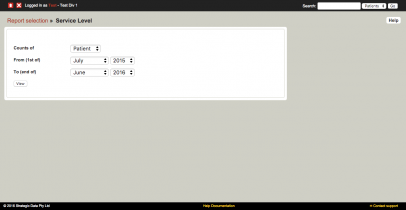

ATAPS Help - Reports
To access the automated reports on the MDS, click on the 'Report selection' link located on the home page.
The following types of reports are available:
- Service Level matrix (used for reporting to the Department)
- Performance Indicators (used to analyse outcome measure completion)
- Referral type cross-tabulation (used for reporting to the Department)
- Frequency Distribution
- Data Summary Report
Service Level matrix
There are two Service Level matrix reports intended for use by organisations in their departmental reporting. One report summarises activity by counting attended sessions; the other indicates the number of patients who attended sessions.
The reporting period can be specified by indicating a starting and ending month and year combination.

Patient report
The Service Level Patient Report is a count of patients who attended at least one session in the period grouped by sub-population (i.e. Child, Aboriginal or Torres Strait Islander, people with low income, people in rural and remote locations, people from culturally and linguistically diverse communities) and referral type (General ATAPS, Suicide Prevention, Perinatal Depression, Homelessness, Aboriginal or Torres Strait Islander, Rural and Remote, Extreme Climatic Events).
If a patient has sessions of multiple referral types they will be counted once in each. Similarly, if a patient qualifies for multiple sub-populations they will be counted in each.
Session report
The Service Level Patient Report is a count of session attended (unattended sessions are excluded) within the analysis period grouped by sub-population and referral type. Sessions are counted in all sub-populations for which they qualify. For example, an Aboriginal child who received 12 sessions will be counted in both the 'Children aged 0-12' and the 'Aboriginal and Torres Strait Islanders' categories.
Total calculation
The overall counts of patients and sessions - one for ATAPS and one for MHSRRA are unique at the program level, not a sum of the numbers reported by referral type or sub-population. Once again these are based on attended sessions only. As it is possible for a particular patient to have referrals of different types during any reporting period, the sum of figures in the referral type rows can be higher than the figure reported in the Total ATAPS row.
General notes
- MHSRRA has been added to these reports by treating it as a referral type.
- The Session Report includes the number and percentages of sessions delivered without incurring a co-payment by the patient. This column is not included for the Patient Report as co-payment data is applicable to sessions only.
- Percentages are based on the row totals; a 'Total %' column has not been included due to redundancy (all figures in such a column would be 100%).
- The total for patients seen under the ATAPS program is independent of the figures in the MHSRRA program.
Sub-population membership
The following rules apply when determining the membership of a sub-population:
- Patient characteristics fields apply regardless of whether the report is a patient report or a session report.
- For patient characteristics recorded on the referral record, the relevant referral depends on the report.
- For the sessions report, membership of a sub-population is derived from the details recorded on the linked referral.
- For the patients report, the relevant referral is the last in the reporting period for that patient (for the total at the bottom of the report) or the last referral of that type in the reporting period (for the breakdown by referral type). Note: There are some instances where the 'last' referral is ambiguous because there is more than one referral on the same day. In such cases, if any of the referral records indicate membership of a sub-population the person is counted as belonging to that sub-population(s).
Children aged 0-12
Age will be calculated by deducting Birth Year from Referral Year as of the 1st of January (e.g. in 2015 a birth year of 2015 will result in an estimated age of 0, in 2016 the age would be estimated as 1).
Aboriginal and Torress Strait Islanders
Included if one or both of Aboriginal or Torres Strait islander has been endorsed on the patient record.
Performance Indicators
There are three reports to be used to analyse outcome measure completion rates:
Referrals without a conclusion and no session activity for 90+ days
By referral type, shows the number of referrals without a conclusion and no session activity for 90+ days and also the number of referrals without a conclusion and no session activity for 90+ days as a percentage of referrals without a conclusion. These figures are shown for three time periods - End of previous finanical year, end of last quarter and today so that organisations can track their progress over time.
Measures for resolved referrals
By referral type, shows the number of measures recorded for resolved referrals. The report breaks the counts down by 'Treatment Completed' and 'Other conclusion'. Within this breakdown the counts are futher broken down by resolved referrals with no measures, resolved referrals with only an initial or final measure and resolved referrals with both an initial and final measure.
Percentage of Standard Measures
By referral type, shows the percentage of measures used that were standard measures. The report breaks these percentages down by initial collection, final collection and total.
Referral type cross-tablulation
The Referral type cross-tabulation report produces the statistics that organizations currently require for their six-month Departmental reporting.
Referral type cross-tabulation reports can be broken down by Referral Type within the specified date range.
Referral counts can be cross-tabulated by one of: Referrer Type, Low Income, Education, Lives Alone, or Previous Care.
Session counts can be cross-tabulated by one of: Session Type, Session Copayment, Session Duration, or Session Modality.
All referrals or sessions within the specified date range are included. Historical data is not mapped onto current organisational structures within these reports.
Frequency Distribution
The Frequency Distribution report produces a frequency distribution (count and percentage) by selected date range, for the following items: age, gender, language at home, English level, Aboriginal, Torres Strait Islander, low income, education, lives alone, diagnostic categories, medication, strategies referred for, previous care, session duration, session type, strategies provided and copayment. With the Report Selection (Frequency Distribution), first you must customise the details you wish to report on. Complete the form, then click "View" to see the report.
Data Summary Report

{kind=link}
{kind=link}
{kind=link}
{kind=link}
{kind=link}
{kind=link}
{kind=link}
{kind=link}
{kind=link}
{kind=link}
When viewing the Data Summary Report, click on the linked figures to view their details.
Data Summary Notes
The data summary provides a breakdown of patient and session numbers tabulated by financial year and number of sessions. This summary can be a useful tool for finding patients who have not had the expected number of sessions. The number of patients (actually referrals) with 0, 1-5, 6 and 7 or more sessions are displayed and clicking on these numbers allows you to get a list of the patients (by Patient Key) falling into that category.
Note: there has been some confusion regarding the session counting scheme. In particular, the differences between the data summary and the download data. The short answer is that the session download file is collected by session date, while the session data summary is grouped by referral date. This means that sessions are counted in the financial year in which their referral was dated, and are not counted in the financial year in which the sessions actually took place.
The reason for this difference is that data summary rows need to be consistent; the "Patients with N Sessions" columns refer to patients so a patient with 3 sessions in 2004-05 and 3 in 2005-06 should be counted in the "6 sessions" column (as one patient). This patient and the associated sessions are counted with the financial year of the referral (and so a patient with multiple referrals may be actually counted in different years).
The "Total Sessions" is the sum of the sessions referred to by the "Patient with N Sessions" columns, the example patient above would add 6 to this total in the year 2004-05.